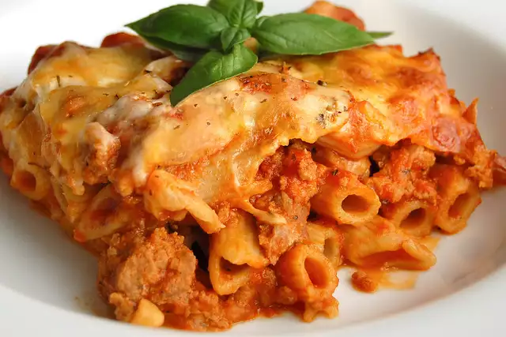

Lasagna Recipe

Description
this recipe will make you fall in love with lasagna. Great for when having family and friends over. An absolute all-time favorite.
Ingredients
- 1 pound lean ground beef
- 4 cups crushed tomatoes
- 6 uncooked lagna noodles
- 15 ounces of ricotta cheese
- 2 and a halv cups of shredded mozarella cheese
- a fourth cup of hot water
- pepper
- basil
- salt
- tomato paste
Directions
- Cook beef in a large skillet over medium heat, stirring until it crumbles and is no longer pink; drain. Stir in pasta sauce.
- Spread one-third of meat sauce in a lightly greased 11- x 7-inch baking dish; layer with 3 noodles and half each of ricotta cheese and mozzarella cheese. (The ricotta cheese layers will be thin.) Repeat procedure; spread remaining one-third of meat sauce over mozzarella cheese. Slowly pour 1/4 cup hot water around inside edge of dish. Tightly cover baking dish with 2 layers of heavy-duty aluminum foil.
- Bake at 375° for 45 minutes; uncover and bake 10 more minutes. Let stand 10 minutes before serving.